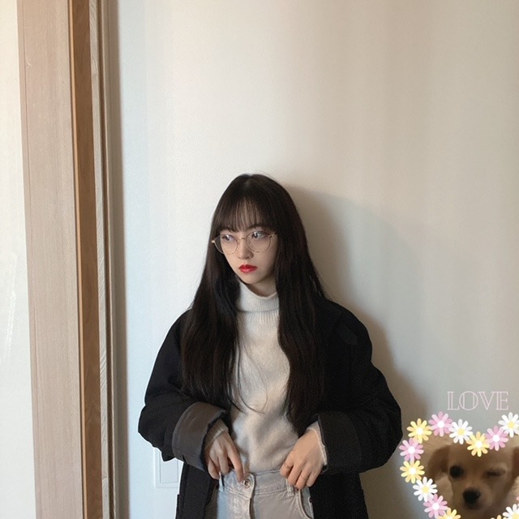
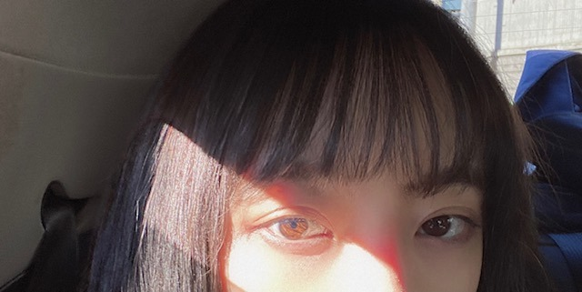
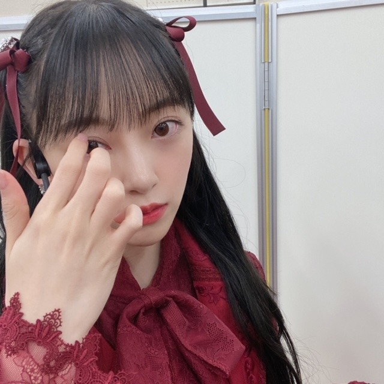

2021/0102Sat2021
あけましておめでとうございます．
今年もよろしくお願いします！

mステスーパーライブから
レコ大、紅白、CDTVと
怒涛の年末が終わり今はお家でまったりしてます
乃木坂46としての残りの時間、
楽しみたいと思います．
そして新たな道も、頑張りたいです．
2021年、笑いで溢れた1年にしたいな！

まぶし
あ、今月1/28発売の
platinum FLASH チェックしてください✨
表紙巻頭させていただいています

では
☺︎
2021/01/02 18:00
コメント(444)
ブログ更新ありがとう
最後まで楽しもう
最後まで楽しもう
残りの乃木坂の活動を楽しんで下さい
未央奈あけましておめでとうございます。
乃木坂としての残りの時間楽しんでください
今年は未央奈にとって変化の年になると思います。
どんな時も応援します
乃木坂としての残りの時間楽しんでください
今年は未央奈にとって変化の年になると思います。
どんな時も応援します
あきちゃんです、ハッピーニューイヤー今年もよろしくお願いします。そしてみおなちゃんが乃木坂46を卒業してもずっとみおなちゃんのことを応援します。生写真の牛のやつ買いました、僕わ今年いいことがあると信じています。なぜならば、まさに牛年の年男の子だからです。もうすぐでるシングルで卒業するみおなちゃんさみしいけどずっと応援します。卒業コンサートわ無事に埼玉スーパーアリーナでやってほしいな、みおなちゃんが乃木坂46で一番好きなメンバーです。そして昨日乃木神社でお詣りしてきました、コロナウイルスが落ちつくようにお願いしてきました、乃木坂46のなかで一番みおなちゃんが推しメンです。だから27日にでるシングルみおなちゃんの卒業ソングはいってるCタイプを3つ頼みました。保存よおうと聴くように買います。コメントはいるまで何回も書きます。❤❤❤❤❤❤❤❤❤❤❤❤❤❤❤❤❤❤❤
ブログ更新ありがとうございます！！
この1ヶ月の歌番組全部見たよ〜
本当に一回一回髪型とか雰囲気とかこだわってくれてて本当にアイドルだな〜って感じでとにかく最高にかわいかったです！！
レコ大ではお姫様みたいな雰囲気で、しかも堀北で抜かれてるところもあって、絢音ちゃんとはお揃いのカチューシャしてて、本当に見てて楽しかったよ！
紅白のハーフツインも、エンディングのツインテールも、真っ赤な衣装もとっても似合ってました。
他の番組も全部、未央奈さんが映るたびに嬉しくなりました！
やっぱり未央奈さんのパフォーマンスが好きです。
最後になるパフォーマンスが多いと思うから、これからもしっかりと目に焼き付けるね！！
2020年、未央奈さんのおかげで暗い期間も明るく過ごせました。
だから2021年は未央奈さんにとって本当にいい年になることを願ってます！ずっとずっと応援します。いつもありがとう！
今年もよろしくです！
この1ヶ月の歌番組全部見たよ〜
本当に一回一回髪型とか雰囲気とかこだわってくれてて本当にアイドルだな〜って感じでとにかく最高にかわいかったです！！
レコ大ではお姫様みたいな雰囲気で、しかも堀北で抜かれてるところもあって、絢音ちゃんとはお揃いのカチューシャしてて、本当に見てて楽しかったよ！
紅白のハーフツインも、エンディングのツインテールも、真っ赤な衣装もとっても似合ってました。
他の番組も全部、未央奈さんが映るたびに嬉しくなりました！
やっぱり未央奈さんのパフォーマンスが好きです。
最後になるパフォーマンスが多いと思うから、これからもしっかりと目に焼き付けるね！！
2020年、未央奈さんのおかげで暗い期間も明るく過ごせました。
だから2021年は未央奈さんにとって本当にいい年になることを願ってます！ずっとずっと応援します。いつもありがとう！
今年もよろしくです！
あけましておめでとう！
怒涛の年末、お疲れ様でしたm(_ _)m
お正月はゆっくり過ごしてね(๑˃̵ᴗ˂̵)
今年は明るく楽しい年にしようね！！
怒涛の年末、お疲れ様でしたm(_ _)m
お正月はゆっくり過ごしてね(๑˃̵ᴗ˂̵)
今年は明るく楽しい年にしようね！！
頑張れー！！！最後にみたいものがある、、でも見れるように頑張ります。ありがとう未央奈。乃木坂に入ってくれて！！2期生を好きになったのも2ndバスラで未央奈を見てから。応援できたことが幸せです！！
堀ちゃんブログ更新ありがとうございます。
堀ちゃん今日も可愛いです。
堀ちゃん今日も１日お疲れ様です。
今日はお仕事お休みでした。
今日は１日ゆっくりと休むことが出来ました。
明日はお仕事です。
こないだハロウィンの生写真届きました。
堀ちゃんの生写真買いました。
凄く可愛いです。
これからも堀ちゃんの生写真集めていきます。
これからもお仕事頑張って下さい。
自分もお仕事頑張ります。
これからのブログを楽しみにしてます。
堀ちゃん今日も可愛いです。
堀ちゃん今日も１日お疲れ様です。
今日はお仕事お休みでした。
今日は１日ゆっくりと休むことが出来ました。
明日はお仕事です。
こないだハロウィンの生写真届きました。
堀ちゃんの生写真買いました。
凄く可愛いです。
これからも堀ちゃんの生写真集めていきます。
これからもお仕事頑張って下さい。
自分もお仕事頑張ります。
これからのブログを楽しみにしてます。
僕が乃木坂を好きなったきっかけはNOGIBINGOの未央奈でした！面白くて可愛い本当すごい女性がいるんだなと思ってそこから乃木坂、そして未央奈が大好きになりました！
卒業してしまうのは悲しいけど、ずっとずっと推していきます！残りの期間頑張ってください！卒コンあるといいなぁ！
卒業してしまうのは悲しいけど、ずっとずっと推していきます！残りの期間頑張ってください！卒コンあるといいなぁ！
みおなさん、ありがとう。
今でも寂しい気持ちで一杯です。
残りの期間、精一杯応援します！
今でも寂しい気持ちで一杯です。
残りの期間、精一杯応援します！
未央奈ブログ更新ありがとう！
あけおめ！ 2021年も未央奈を推していきます♡
まずは、年末年始の歌番組出演お疲れ様です♪
Mステ･レコ大･紅白･CDTV、どれも素敵でした…♪
毎回髪型違ったから、色んな未央奈見れてすっごく嬉しかったよ！紅白のハーフツイン？めっちゃ可愛かったよ！
乃木坂の事をあまり知らない先輩も、｢衣装と相まって大人っぽい｣って言ってたよ！！
CDTV年越しのツインテール可愛かった！！ 高いツイン似合ってて羨ましいなぁ…
これからも頑張ってね！ ずっと大好きだよ♡♡♡
あけおめ！ 2021年も未央奈を推していきます♡
まずは、年末年始の歌番組出演お疲れ様です♪
Mステ･レコ大･紅白･CDTV、どれも素敵でした…♪
毎回髪型違ったから、色んな未央奈見れてすっごく嬉しかったよ！紅白のハーフツイン？めっちゃ可愛かったよ！
乃木坂の事をあまり知らない先輩も、｢衣装と相まって大人っぽい｣って言ってたよ！！
CDTV年越しのツインテール可愛かった！！ 高いツイン似合ってて羨ましいなぁ…
これからも頑張ってね！ ずっと大好きだよ♡♡♡
未央奈さん、明けましておめでとうございます。
Mステのときの曲の披露が終わった後の未央奈さん、とても素敵でした！
卒業を控えた未央奈さんにとって、2021年は大きな年になりそうですね。
そして、2021年は僕にとっても大学受験の年であり、未央奈さんと同じように自分の環境が変わる大きな年になります。未央奈さんが残りの乃木坂での時間を楽しむように、僕も残りの高校生活を楽しもうと思ってます。そして、自分勝手なことですが、輝き続ける未央奈さんに負けないように受験勉強を頑張ります！
未央奈さんの2021年が実りのある幸せに満ちた1年になることを心から祈っています！
頑張ってください！
Mステのときの曲の披露が終わった後の未央奈さん、とても素敵でした！
卒業を控えた未央奈さんにとって、2021年は大きな年になりそうですね。
そして、2021年は僕にとっても大学受験の年であり、未央奈さんと同じように自分の環境が変わる大きな年になります。未央奈さんが残りの乃木坂での時間を楽しむように、僕も残りの高校生活を楽しもうと思ってます。そして、自分勝手なことですが、輝き続ける未央奈さんに負けないように受験勉強を頑張ります！
未央奈さんの2021年が実りのある幸せに満ちた1年になることを心から祈っています！
頑張ってください！
今年も宜しく
(^o^)
(^o^)
素敵な１年になりますように～(^o^)
堀ちゃんブログ更新ありがとう！
あけましておめでとうございます。
年末から新年にかけてお疲れ様でした。
最後の紅白、ワインレッドの衣装とても素敵でツインテールも可愛かったよ。
紅組、優勝したね！自分はもちろん紅組に投票したよ！
今年、堀ちゃんにとっていい一年なるように願ってます！
では
あけましておめでとうございます。
年末から新年にかけてお疲れ様でした。
最後の紅白、ワインレッドの衣装とても素敵でツインテールも可愛かったよ。
紅組、優勝したね！自分はもちろん紅組に投票したよ！
今年、堀ちゃんにとっていい一年なるように願ってます！
では
未央奈の卒業まてついていきやすっ。
ずっとずっと大好き未央奈。
ずっとずっと大好き未央奈。
あけおめ〜！
卒業までの残りの時間がんばって！
そして全力でたのしんでね！
卒業までの残りの時間がんばって！
そして全力でたのしんでね！
未央奈ちゃん♥
あけましておめでとうございます。
今年もよろしくお願いします。
ブログ更新ありがとうございます。
レコード大賞、紅白、衣装が決まってて、かわいかったよ。♥
みおなの髪型、真剣な目に、魅了されたよ。♥
最後の、レコード大賞と紅白のステージ、目に涙が浮かんだ。
26thシングルで、卒業まで思い切り歌いダンスをしてくださいね。♥
寒さが厳しい折、一層のご自愛を。
あけましておめでとうございます。
今年もよろしくお願いします。
ブログ更新ありがとうございます。
レコード大賞、紅白、衣装が決まってて、かわいかったよ。♥
みおなの髪型、真剣な目に、魅了されたよ。♥
最後の、レコード大賞と紅白のステージ、目に涙が浮かんだ。
26thシングルで、卒業まで思い切り歌いダンスをしてくださいね。♥
寒さが厳しい折、一層のご自愛を。
かわいいです いつも私の目標です。ありがとう
明けましておめでとうございます
年末お疲れさまでした
未央奈さんにたくさん笑顔をもらいました
乃木坂としての残りわずかの活動は目一杯楽しんでください
もちろん卒業後の活躍も楽しみにしています
これからも変わらず応援させてください
platinum FLASH楽しみに待ちます
年末お疲れさまでした
未央奈さんにたくさん笑顔をもらいました
乃木坂としての残りわずかの活動は目一杯楽しんでください
もちろん卒業後の活躍も楽しみにしています
これからも変わらず応援させてください
platinum FLASH楽しみに待ちます
ブログ更新ありがとう！
あけましておめでとう！
レコード大賞の時の衣装お姫様みたいで可愛かった♡
紅白もCDTVも見たよ！
ツインテールめっちゃ可愛い！
今年もたくさん応援します！
あけましておめでとう！
レコード大賞の時の衣装お姫様みたいで可愛かった♡
紅白もCDTVも見たよ！
ツインテールめっちゃ可愛い！
今年もたくさん応援します！
未央奈、明けましておめでとう〜！
紅白はじまるよからの紅白本番からのCDTVで3つも違う髪型と衣装の未央奈が見れてとても充実した大晦日と正月でした…！
私は去年の2月に未央奈を好きになって、そこから乃木坂を好きになって、あの日バレッタのMVを見ていなかったら今の私はないってぐらい影響されました。
そこからじわじわと乃木坂を追いかけるようになったんですが、一回もライブも握手会も行けないまま未央奈が卒業しちゃうのかと思うととても悲しいです…
未央奈が卒業する前に配信でもいいのでライブをしてほしいなんていう願いが叶うといいな…
あと、今年中にはホットギミックも見ますよ！
乃木荘の卒業回も寂しい気持ちで見ていましたが、寂しい寂しいばっか言ってても意味ないので！未央奈の新しい道も応援します！！
2021年も未央奈にとって素敵な一年になりますように！
今年もよろしくお願いします(..)
紅白はじまるよからの紅白本番からのCDTVで3つも違う髪型と衣装の未央奈が見れてとても充実した大晦日と正月でした…！
私は去年の2月に未央奈を好きになって、そこから乃木坂を好きになって、あの日バレッタのMVを見ていなかったら今の私はないってぐらい影響されました。
そこからじわじわと乃木坂を追いかけるようになったんですが、一回もライブも握手会も行けないまま未央奈が卒業しちゃうのかと思うととても悲しいです…
未央奈が卒業する前に配信でもいいのでライブをしてほしいなんていう願いが叶うといいな…
あと、今年中にはホットギミックも見ますよ！
乃木荘の卒業回も寂しい気持ちで見ていましたが、寂しい寂しいばっか言ってても意味ないので！未央奈の新しい道も応援します！！
2021年も未央奈にとって素敵な一年になりますように！
今年もよろしくお願いします(..)
ブログ更新ありがとう！
Mステ、レコ大、紅白、CDTVお疲れ様！
堀ちゃんのパフォーマンスを見るたびに素敵なパフォーマンスで涙しちゃいました！
残りの乃木坂の活動も思いっきり楽しんでね！
Mステ、レコ大、紅白、CDTVお疲れ様！
堀ちゃんのパフォーマンスを見るたびに素敵なパフォーマンスで涙しちゃいました！
残りの乃木坂の活動も思いっきり楽しんでね！
明けましておめでとうございます 堀ちゃん♪ヽ(´▽｀)/みおなちゃん♪ヽ(´▽｀)/に素晴らしい事が有ります様に♪ヽ(´▽｀)/
あけましていおめでとうございます。
こちらこそ、今年もよろしくお願いいた
します。
お家でまったり、いいじゃない。お正月
ならではの醍醐味。
コロナが今年こそ終息して、卒業のセレ
モニーとか盛大に出来るといいんだけど。
でも寂しくなるなぁ。毎月劇場でもそう
だけど、みおなちゃんの本心がわからな
い、とぼけた演技が好きなんだよなぁ。
ほ りみおな さんとか。メンバーに強
いる変なダンスとか。
ただホットギミックとか、インスタに
アップしている写真とか見ると、その才
能を眠らせておくのも、もったいないし。
とにかく、踏み出す年ですね。
こちらこそ、今年もよろしくお願いいた
します。
お家でまったり、いいじゃない。お正月
ならではの醍醐味。
コロナが今年こそ終息して、卒業のセレ
モニーとか盛大に出来るといいんだけど。
でも寂しくなるなぁ。毎月劇場でもそう
だけど、みおなちゃんの本心がわからな
い、とぼけた演技が好きなんだよなぁ。
ほ りみおな さんとか。メンバーに強
いる変なダンスとか。
ただホットギミックとか、インスタに
アップしている写真とか見ると、その才
能を眠らせておくのも、もったいないし。
とにかく、踏み出す年ですね。
今年もよろしく！
未央奈ちゃんこんばんは‼明けましておめでとうございます！今年もお仕事頑張って下さい！卒業しても応援します‼ありがとうございます！楽しみにしてます頑張ります‼すいません
未央奈ちゃん更新ありがとう！
あけましておめでとうございます
怒涛の年末お疲れ様でした✨ゆっくり休んでね♡
個人的に高めのツインテール大好きです❤︎.*
残りの活動楽しんでね！！
ずっとずっと大好き❤️
あけましておめでとうございます
怒涛の年末お疲れ様でした✨ゆっくり休んでね♡
個人的に高めのツインテール大好きです❤︎.*
残りの活動楽しんでね！！
ずっとずっと大好き❤️
ブログ更新ありがとうございます。
あけましておめでとうございます。
紅白歌合戦の時の衣装かわいかったです。
あけましておめでとうございます。
紅白歌合戦の時の衣装かわいかったです。
堀ちゃん、明けましておめでとう＼(^-^)／
ブログありがとう！
年末は歌番組たくさん本当におつかれさまでした。
乃木坂46の活動を最後まで楽しんでね
今年も宜しくねっ！
ブログありがとう！
年末は歌番組たくさん本当におつかれさまでした。
乃木坂46の活動を最後まで楽しんでね
今年も宜しくねっ！
ノギ荘を卒業したけど、1月末で終わりじゃないよね。。。
卒コンが無いとか無いよね。
しかし、最近、他のメンバーから面倒見の良さが、
ばっしばっし伝わってきて
未央奈が推しには嬉しいですね。
卒業しても、未央奈推しは変わりません。
応援しています。
卒コンが無いとか無いよね。
しかし、最近、他のメンバーから面倒見の良さが、
ばっしばっし伝わってきて
未央奈が推しには嬉しいですね。
卒業しても、未央奈推しは変わりません。
応援しています。
堀ちゃん、昨年もたくさんの素敵なパフォーマンスをありがとう❗レコ大、２期生がみんな出ていて嬉しかったです❗紅白は最後真ん中に映ってましたね❗卒業まで全力で応援してます❗(卒業後も応援します❗)健康に気を付けて、たくさんの素敵な笑顔を魅せてください❗
堀ちゃん！2021年も頑張ってね
ほりっぴ～、ナンチです♪
今年のブログにあらためてね
明けましておめでとう
新たなチャレンジの年になるね
いつも前を向いているほりっぴ～を尊敬してるし、これからも変わらず応援してます
ほりっぴ～にとって笑顔溢れる一年になりますように
今年のブログにあらためてね
明けましておめでとう
新たなチャレンジの年になるね
いつも前を向いているほりっぴ～を尊敬してるし、これからも変わらず応援してます
ほりっぴ～にとって笑顔溢れる一年になりますように
未央奈ちゃんこんばんは‼明けましておめでとうございます‼今年もお仕事頑張って下さい！ありがとうございます‼楽しみにしてます頑張ります‼卒業しても応援します‼ありがとうございます
あけましておめでとう！！！
未央奈にとって今年は変化の1年になるかもしれないけど未央奈らしく変わらず元気にいてね！！
未央奈にとって今年は変化の1年になるかもしれないけど未央奈らしく変わらず元気にいてね！！
あけましておめでとうございます！
卒業は本当に寂しいですが、乃木坂の活動も、その後のお仕事でも2021年頑張ってください。
前回がラストだと思ってたので投稿嬉しかった…ありがとうございます。
2021年もこれからもずっと応援しております。
卒業は本当に寂しいですが、乃木坂の活動も、その後のお仕事でも2021年頑張ってください。
前回がラストだと思ってたので投稿嬉しかった…ありがとうございます。
2021年もこれからもずっと応援しております。
明けましておめでとうございます。今年も宜しくお願いします。
しっかり見届けます。卒業しても応援しますしいろいろと楽しみにして待ってます。
しっかり見届けます。卒業しても応援しますしいろいろと楽しみにして待ってます。
ブログ更新ありがとう
まずは年末年始のお仕事お疲れ様でした！ゆっくり休んでね。年を越してから、『あぁ今年は未央奈ちゃんが卒業しちゃう年だな』って初めに思いました。でも、卒業したからといって私の気持ちが変わるわけではありません！これからもずっとずっと応援してるよ。乃木坂としての残り少ない時間も、未央奈ちゃんにとっての2021年も、しあわせな時間になりますようにって初詣でお願いするんだ…！一つ一つのお仕事・歌番組なども目に焼き付けておこうと思っています。いつもありがとう！今日も大好きです。
まずは年末年始のお仕事お疲れ様でした！ゆっくり休んでね。年を越してから、『あぁ今年は未央奈ちゃんが卒業しちゃう年だな』って初めに思いました。でも、卒業したからといって私の気持ちが変わるわけではありません！これからもずっとずっと応援してるよ。乃木坂としての残り少ない時間も、未央奈ちゃんにとっての2021年も、しあわせな時間になりますようにって初詣でお願いするんだ…！一つ一つのお仕事・歌番組なども目に焼き付けておこうと思っています。いつもありがとう！今日も大好きです。
初コメです。
たくさんの音楽番組出演お疲れ様でした。
テレビの前で楽しませてくれてありがとうございました。
卒業まで楽しんで乃木坂の時間を過ごしてください。
これからも応援してます！
たくさんの音楽番組出演お疲れ様でした。
テレビの前で楽しませてくれてありがとうございました。
卒業まで楽しんで乃木坂の時間を過ごしてください。
これからも応援してます！
堀未央奈❤明けましておめでとう☺去年は、ミュージックステーション、レコード大賞、紅白、CDTVお疲れ様❗楽しめたかな？
ミュージックステーションだけは仕事で最初から見れなかったけどメドレーは、見れたよ☺
後は、最初から見れたからね☺去年は、乃木坂レコード大賞取れなかったね(T_T)
残念だったね(T_T)去年の紅白は、紅組勝ったよね＼(^_^)／良かったね＼(^_^)／
俺は、紅組に投票したよ(^o^)紅白終わってからすぐ移動して大変だったよね？
CDTVの時眠くならなかった？大丈夫だったかな？
未央奈❤休める時にゆっくり休んでね☺
今年もまだ東京は、コロナ増えてるから気を付けてね(^_^)v
卒業するまで乃木坂で頑張ってね(^_^)v
未央奈❤の事見守りながら応援しているからね(*^_^*)
今年も宜しくね(*^^*)未央奈❤大好き❤愛してる❤
ミュージックステーションだけは仕事で最初から見れなかったけどメドレーは、見れたよ☺
後は、最初から見れたからね☺去年は、乃木坂レコード大賞取れなかったね(T_T)
残念だったね(T_T)去年の紅白は、紅組勝ったよね＼(^_^)／良かったね＼(^_^)／
俺は、紅組に投票したよ(^o^)紅白終わってからすぐ移動して大変だったよね？
CDTVの時眠くならなかった？大丈夫だったかな？
未央奈❤休める時にゆっくり休んでね☺
今年もまだ東京は、コロナ増えてるから気を付けてね(^_^)v
卒業するまで乃木坂で頑張ってね(^_^)v
未央奈❤の事見守りながら応援しているからね(*^_^*)
今年も宜しくね(*^^*)未央奈❤大好き❤愛してる❤
あけましておめでとう！
ここまではお疲れ様でした、これからも応援してます！
ここまではお疲れ様でした、これからも応援してます！
未央奈ちゃん(^^)
更新ありがとうございます❥
相変わらず美しいですね✨
可愛すぎます❥
テレビ出演も、お疲れ様でした！
ゆっくり休んでくださいね
ではまた！
未央奈ちゃん大好きです❥
更新ありがとうございます❥
相変わらず美しいですね✨
可愛すぎます❥
テレビ出演も、お疲れ様でした！
ゆっくり休んでくださいね
ではまた！
未央奈ちゃん大好きです❥
あけましておめでとうございます。 ブログの更新とても嬉しいです。
歌番組のご出演お疲れ様でした。 全部拝見しました。
未央奈さんにお伝えしたいことがたくさん頭を駆け巡りますが、ひとつだけ。
私自身、残された未央奈さんとの時間は、自分の感情に正直に、ありのままに過ごそうと思います。
その時が来たら思いっきり泣かせてください。涙をためた瞳で未央奈さんの勇姿を見届けさせてください。
そして願わくば最後は笑顔で。
2021年。 未央奈さん目の前に広がる新しい世界を、新しい笑顔を、新しい幸せを、ファンとして一緒に分かち合えたら。私のような小さな存在が未央奈さんのこの先の心の支えに少しでもなることが出来たら。私はそんな1年にできたらいいなと思っています。
今年もよろしくお願いします。
歌番組のご出演お疲れ様でした。 全部拝見しました。
未央奈さんにお伝えしたいことがたくさん頭を駆け巡りますが、ひとつだけ。
私自身、残された未央奈さんとの時間は、自分の感情に正直に、ありのままに過ごそうと思います。
その時が来たら思いっきり泣かせてください。涙をためた瞳で未央奈さんの勇姿を見届けさせてください。
そして願わくば最後は笑顔で。
2021年。 未央奈さん目の前に広がる新しい世界を、新しい笑顔を、新しい幸せを、ファンとして一緒に分かち合えたら。私のような小さな存在が未央奈さんのこの先の心の支えに少しでもなることが出来たら。私はそんな1年にできたらいいなと思っています。
今年もよろしくお願いします。
未央奈ちゃん、マザー牧場の夜のパフォーマンスから、カウントダウンライブ(年越し)まで、おつかれさまでした。
あけおめです。
やっぱり、どんな衣装でも、どのポジションでも、未央奈ちゃんが僕にとってはセンターで、一番輝いています。
モバメ、ブログ更新もお願いします。
カップスターのコントでもわざと下手に流れにそって表現するのはとても難しいけど、さすがに演技が上手いですね。
これからも応援します。
乃木坂の活動も慕われている後輩ちゃんたち、２期生とたくさんの思い出を作って、悔いの無いように過ごして下さい。
あけおめです。
やっぱり、どんな衣装でも、どのポジションでも、未央奈ちゃんが僕にとってはセンターで、一番輝いています。
モバメ、ブログ更新もお願いします。
カップスターのコントでもわざと下手に流れにそって表現するのはとても難しいけど、さすがに演技が上手いですね。
これからも応援します。
乃木坂の活動も慕われている後輩ちゃんたち、２期生とたくさんの思い出を作って、悔いの無いように過ごして下さい。
卒業は悲しいけどずっと応援し続けます！
堀ちゃんブログ更新ありがとう_(._.)_
これからも頑張ってね！
メガネかけてる写真可愛い❗️
堀ちゃんブログ更新ありがとう_(._.)_
これからも頑張ってね！
メガネかけてる写真可愛い❗️
あけましておめでとう。今年で卒業かぁ!寂しい。若様軍団の２代目リーダーがいなくなったらメンバーの３人は誰を・・・?卒業しても応援してるから!
あけましておめでとうございます。
今年もよろしくお願いします！
音楽番組楽しかったです。
やっぱり注目はどんな髪型で出るのだろうってわくわくでしたよ。
いつもファン思いでありがとう。
未央奈のことを思っているその時間が
幸せな時間 ですので
ですので
あとどの位アイドルの未央奈が見られるのか分かりませんが、
見届けさせてくださいね。
もちろん卒業後は女優堀未央奈を見ることが
一番の楽しみで幸せなことになるんですけどね。
platinum FLASH 嬉しい、早く見たいなー。
お正月、美味しいものいっぱい食べすぎてダイエットしなくちゃって絶対言いそうだね
「冷たい水の中」何度も何度もみています。
2021年、笑顔溢れる一年になりますように、幸せを祈ります。
今年もよろしくお願いします！
音楽番組楽しかったです。
やっぱり注目はどんな髪型で出るのだろうってわくわくでしたよ。
いつもファン思いでありがとう。
未央奈のことを思っているその時間が
幸せな時間
あとどの位アイドルの未央奈が見られるのか分かりませんが、
見届けさせてくださいね。
もちろん卒業後は女優堀未央奈を見ることが
一番の楽しみで幸せなことになるんですけどね。
platinum FLASH 嬉しい、早く見たいなー。
お正月、美味しいものいっぱい食べすぎてダイエットしなくちゃって絶対言いそうだね
「冷たい水の中」何度も何度もみています。
2021年、笑顔溢れる一年になりますように、幸せを祈ります。
乃木坂最後のあけおめですね！
今年も大活躍祈ってます！
今年も大活躍祈ってます！


2021年もひたすらに応援し続けます。